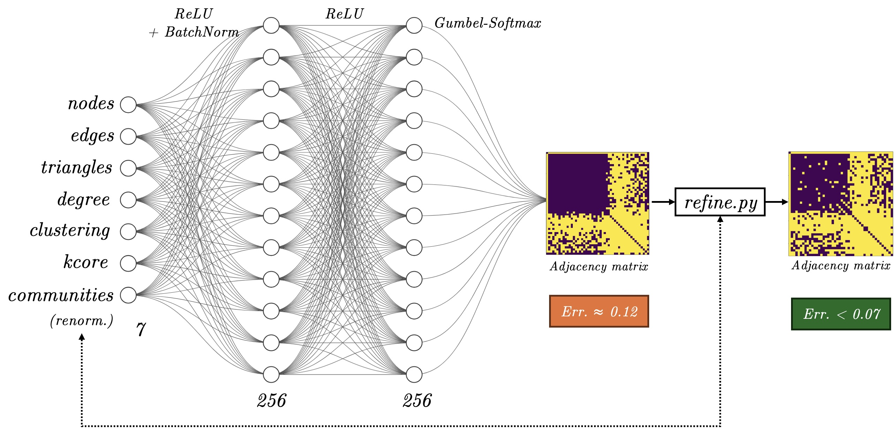

I am an applied mathematics engineer from École polytechnique, based in Paris, now specializing in AI at the MVA (ENS Paris-Saclay), with a focus on optimal transport, deep learning, and image processing.
I also enjoy teaching and am open to new opportunities—feel free to reach out!
Research
Last year, at the Centro de Modelamiento Matemático
 (CMM),
I worked on online algorithms for combinatorial auctions
with J. Correa and
A. Cristi.
Before that, at Inria, I built
tropical support vector machines with
X. Allamigeon,
S. Gaubert, and
T. Molfessis.
(CMM),
I worked on online algorithms for combinatorial auctions
with J. Correa and
A. Cristi.
Before that, at Inria, I built
tropical support vector machines with
X. Allamigeon,
S. Gaubert, and
T. Molfessis.
In 2023, at Exotec, I
doubled the speed of thousands of warehouse robots
by developing a new autopilot.
Before that, at the Centre de Mathématiques Appliquées
(CMAP),
I simulated population dynamics
with V. Bansaye,
M. Breden,
M. Grau, and
D. Sbeiti.
Teaching
- Sciences Po, Teacher in Statistics for the social sciences (2025-present)
- Lycée Louis-le-Grand, Oral examiner in MP and PSI (2024-present).
- École polytechnique, Teaching assistant in Convex optimization (2023-2024).
- Académie de Versailles, Mathematics tutor (2023-2024)
- Apprentis d'Auteuil, Educator (2021-2022)
Education
École polytechnique, Engineer in Applied Mathematics [+] 2021-2024
- 3rd year: operations research, machine learning, random models for biology, uncertainty and risk analysis, compilation, computer architecture.
- 2nd year: statistical learning, optimization and control, variational calculus, stochastic models, rare events, complex analysis, data analysis, algorithms, business economics.
- 1st year: common core (mathematics, computer science, quantum physics, economics, neuroscience).
- Swimming, skydiving and drill instructor for first-year students.
Software: Contributor to the Python Optimal Transport (POT) library.
Languages: French, English and Spanish (proficient), Arabic (intermediate, DEAC '24).
In online combinatorial auctions, m objects are assignable to n agents who arrive
sequentially, in adversarial order. Each agent has a valuation for each possible bundle of
objects. The aim is to distribute these objects on the fly to maximize global welfare. Are there
prices guaranteeing 2/3 of the offline optimum? I got partial results on this hard open problem
for a low number of items and in the simplified context of max-min greedy matching.

We developed max-margin SVMs with efficient training and inference, based on tropical geometry
and mean payoff games, with theoretical guarantees for margin optimality, all-vs-all
multi-class classification, and the ability to perform general piecewise linear classification.
[repo]
I designed, tested and deployed an efficient
model predictive controller
for the
Skypod robot, enabling it to
intelligently anticipate its trajectories and learn about its environment's imperfections.
Using its physical model, the robot is now able to calculate where a series of commands will take it,
and choose the optimal trajectory in the long run. Thanks to my controller, we were able to safely
double the robots' maximum speed up to 4 m/s, enabling them to carry out far more orders for hundreds of
customers in industry, healthcare, retail...
We studied the dynamics of two rival species, and observed that the cross-diffusion term
in the SKT model induced
spatial segregation at equilibrium. To this end, we developed a fast solver of the underlying
non-linear differential equations. We then showed that this continuous model was the limit
of a Markovian random process, which we also simulated.
[repo]
[pypi]
Transfer the style of an image to a content image using VGG19 and optimal transport on the latent space. [repo]
Generate graphs conditioned on seven target features: number of nodes, edges, average degree, triangles, global clustering coefficient, maximum k-core, and Louvain communities. [repo]

Done with Mathias Grau. Among 60 teams, our approach ranked 1st. The given baseline was a VAE + diffusion model, which we improved a lot, but because of the abnormal proximity between training and test data, we found that the simplest models worked better.
With Smaïl El Hafdi, we developed a small compiler from a Python subset to x86 assembly. Final OCaml code is pretty messy for lack of time, but we've implemented type checking, AST simplification and all the linearization steps. [repo]
Done with Mathias Grau. In the sports betting industry, bookmakers rely on extensive digital and statistical tools to evaluate the odds for each team’s victory. One striking example of a rare outcome in football history is Leicester City’s unexpected win in the 2015-2016 Premier League season, which defied all predictions. Inspired by this season, we developed a model to simulate rare events in a tournament setting, which we tested and analyzed against real data. [report]